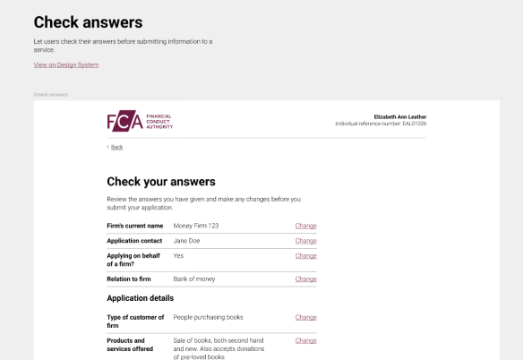
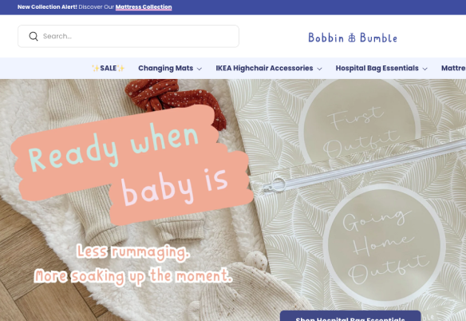
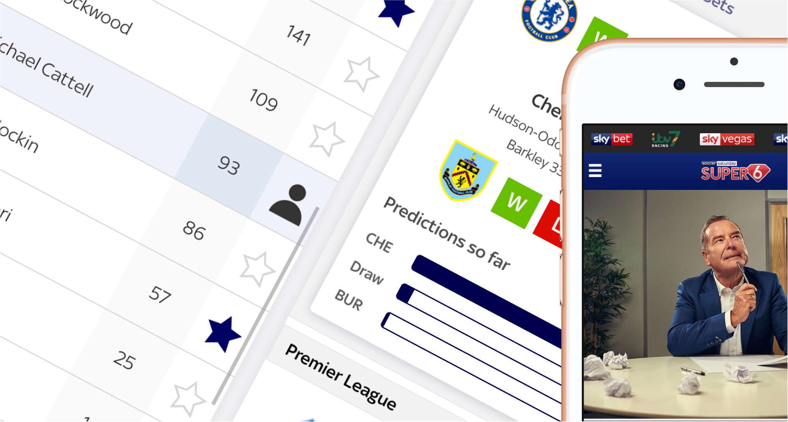
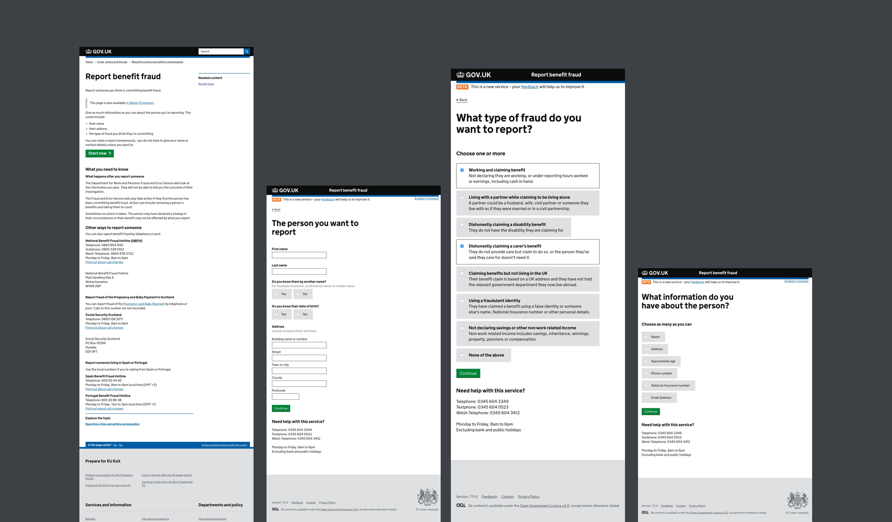
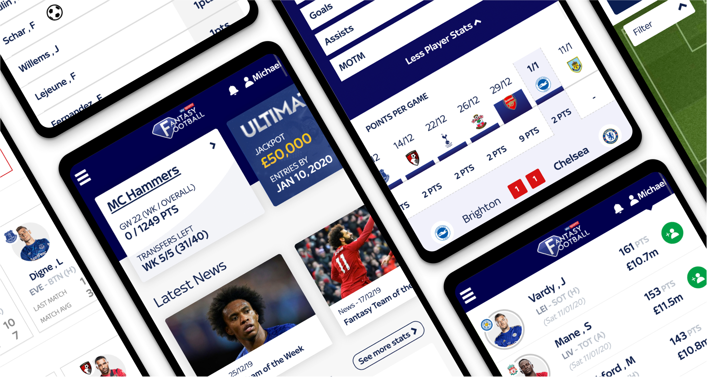

Work across public sector, enterprise and product environments.
Most of my work involves untangling messy systems, navigating regulation and helping teams build digital services that work in the real world.
Featured work.
A selection of projects that best represent how I work today: leading through ambiguity, creating confidence and helping teams deliver better products and services.

HM Revenue & Customs
Designing trust and confidence inside Government Gateway.
Leading interaction design for a security-focused service within Government Gateway, balancing operational risk, technical constraints and the needs of internal teams.
Read case study →

Financial Conduct Authority
Building the conditions for consistent digital delivery.
Establishing shared principles, patterns, tooling and governance across a regulated organisation, with adoption treated as the real design challenge.
Read case study →

AstraZeneca
Designing confidence around enterprise AI.
Exploring how an AI assistant could support global teams while making uncertainty, limitations and user control part of the experience.
Read case study →

Bobbin & Bumble
Turning design improvements into commercial growth.
Reworking the ecommerce experience around clearer journeys, stronger merchandising and measurable business outcomes rather than cosmetic redesign.
Read case study →
More case studies.
Further work across consumer products, healthcare, government services and design systems.

Sky Sports
Designing a game people wanted to keep playing.
Evolving Super 6 through research, experimentation and multiple product releases, increasing engagement and strengthening its connection with Soccer Saturday.
Read case study →

NHS
Improving the accuracy of patient contact data.
Leading research and service design work to improve how patient details were checked, corrected and maintained across NHS services.
Read case study →

Department for Work & Pensions
Making benefit-fraud reporting work with incomplete information.
Redesigning a sensitive GOV.UK service so people could submit useful reports without being blocked by details they did not know.
Read case study →

DWP Design System
Helping a design system grow through community ownership.
Supporting discovery, contribution and adoption across one of government's largest organisations, with the community treated as part of the product.
Read case study →

Sky Sports
Evolving Fantasy Football without alienating existing players.
Modernising a familiar product across mobile and web while protecting the behaviours and expectations of an established audience.
Read case study →